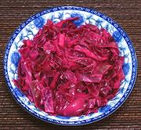

|
Red Cabbage Pickle with CitrusVietnam | ||||
| Makes: Effort: Sched: DoAhead: |
3 cups * 2-2/4 hr Best |
This quick pickle was developed by Andrea Nguyen as an improvement over the coleslaw some modern Banh Mi Sandwich makers include in their sandwiches. This is my favorite Banh Mi pickle. | |||
|
|
12 1/2 ------- 1-1/4 1/4 2/3 3/4 ------- |
oz --- t c c c --- |
Red Cabbage Lime Peel (1) -- Pickle Salt Sugar, brown (2) Water Vinegar, Distilled --------------- |
Make - (2-1/4 hrs - 15 min work)
|